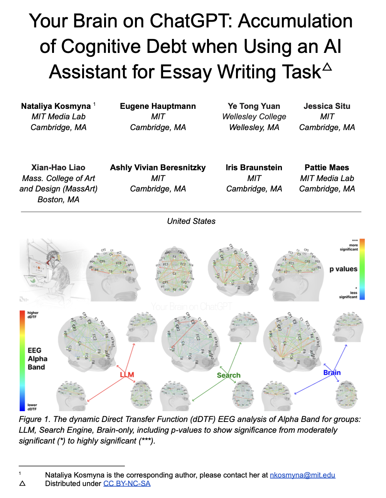
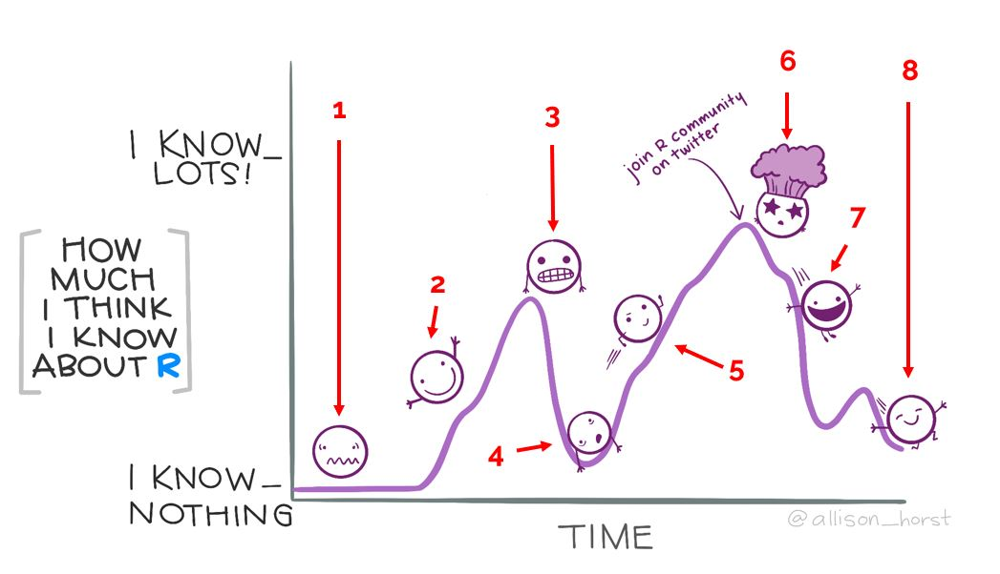
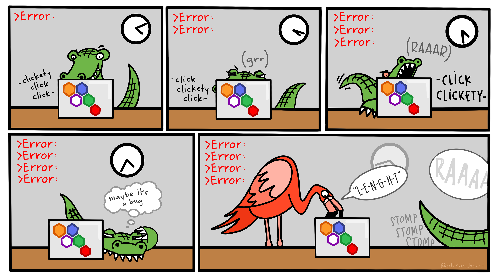
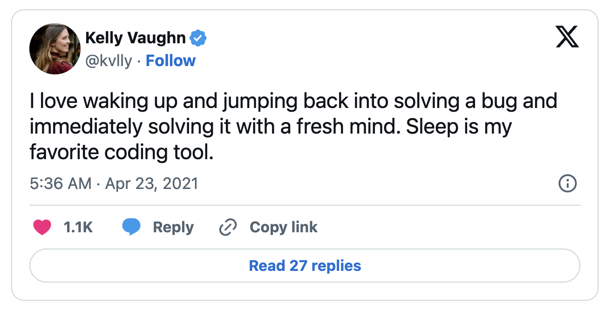
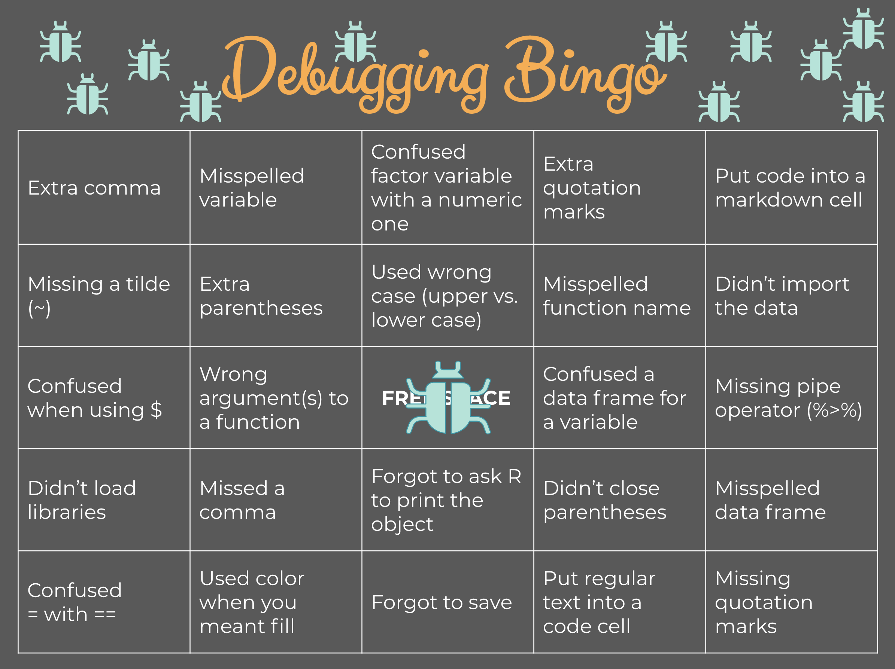
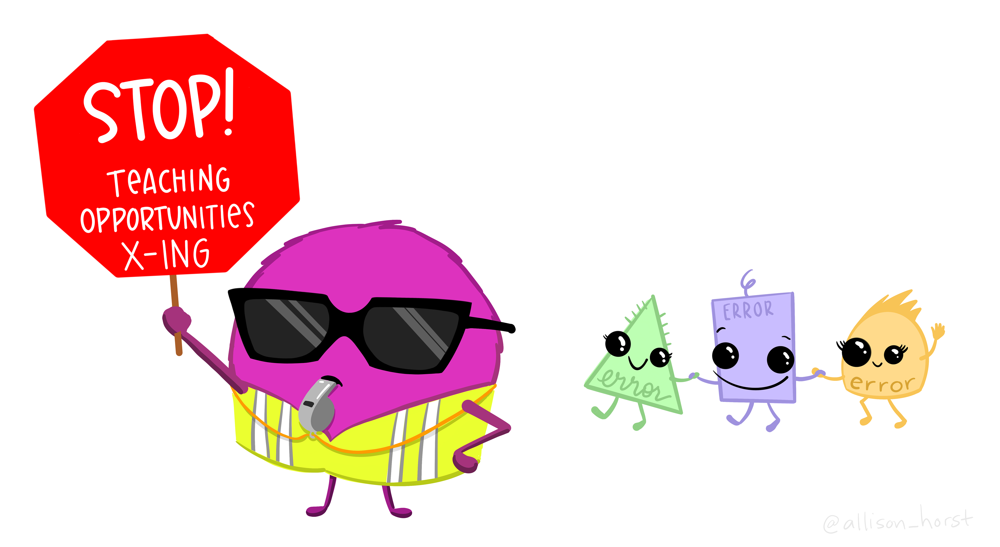
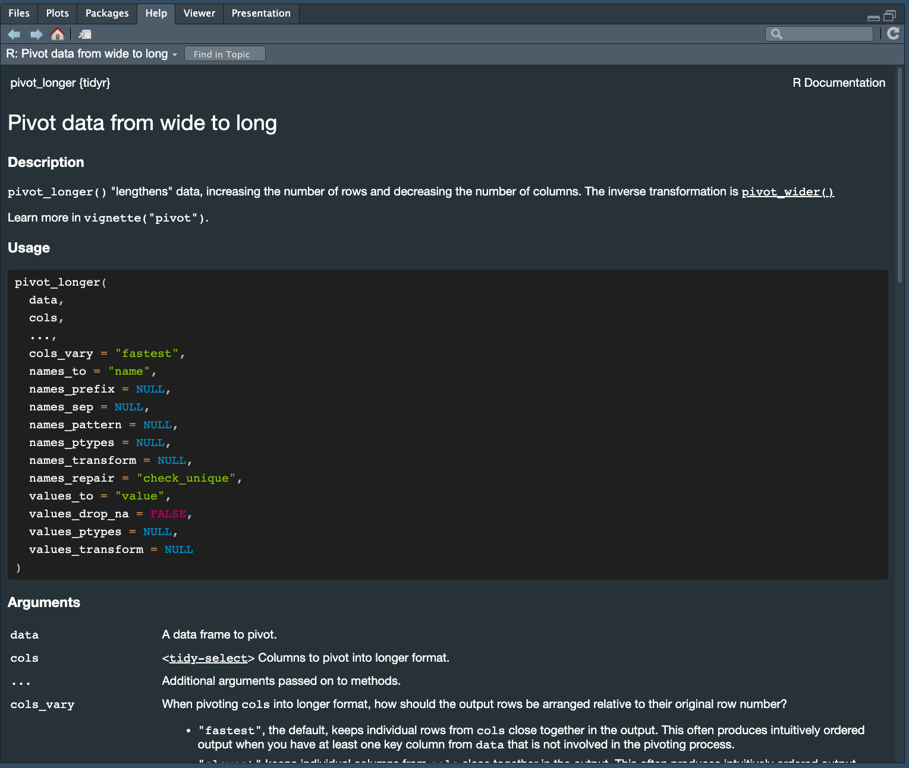
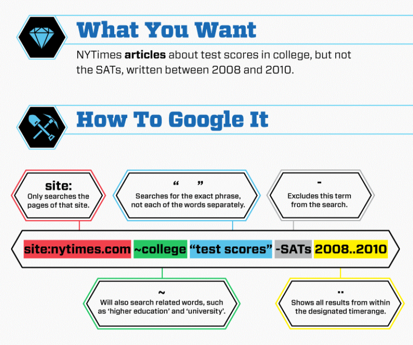
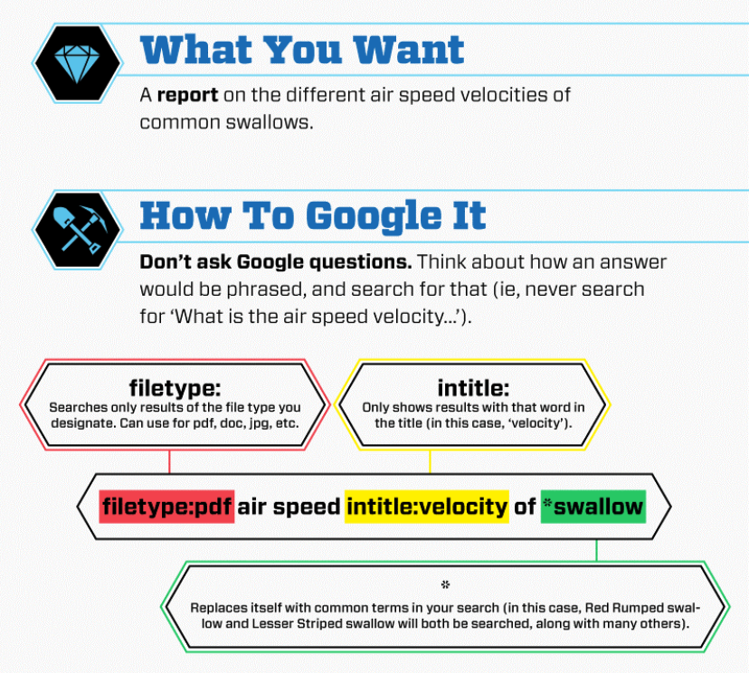

We argue, YES!
Teach Me How to Google (2.0)
The case for search & debugging skills in the age of AI + tips on how to do so effectively
Published: October 11, 2021
Last updated: Jul 18, 2025
Sam Shanny-Csik |
Lecturer & Data Training Coordinator
Master of Environmental Data Science |
Bren School of Environmental Science & Management
Slides & source code available on GitHub
Let’s address the elephant in the room . . .
- Generative AI tools (e.g. ChatGPT) are everywhere now (and maybe you’re already using them!)
- Even Google provides an AI summery with each query
- Does it even pay to “Google,” in the traditional sense, anymore?
Image source: Wikipedia
Evidence suggests that overreliance on ChatGPT can erode critical thinking skills

Group 1: could use ChatGPT
Group 2: could use Google
Group 3: only their brains!
Evidence suggests that overreliance on ChatGPT can erode critical thinking skills
Group 1: could use ChatGPT
- low brain engagement
- “souless,” lacked originality
- copy / pasting by 3rd essay
Group 2: could use Google
Group 3: only their brains!
Evidence suggests that overreliance on ChatGPT can erode critical thinking skills
Group 1: could use ChatGPT
- low brain engagement
- “souless,” lacked originality
- copy / pasting by 3rd essay
Group 2: could use Google
Group 3: only their brains!
- high neural connectivity
- engaged / curious
- claimed ownership & expressed higher satisfaction
Evidence suggests that overreliance on ChatGPT can erode critical thinking skills
Group 1: could use ChatGPT
- low brain engagement
- “souless,” lacked originality
- copy / pasting by 3rd essay
Group 2: could use Google
- also high levels of brain activity and satisfaction!
Group 3: only their brains!
- high neural connectivity
- engaged / curious
- claimed ownership & expressed higher satisfaction
Evidence suggests that overreliance on ChatGPT can erode critical thinking skills
After 3 essays, everyone was asked to re-write one of their previous essays, but Group 1 could no longer use ChatGPT, while Group 2 & Group 3 could now use ChatGPT
- Group 1: difficulty remembering, weaker alpha & theta brain waves (creative ideation & memory load); suggests that they didn’t integrate work into their memory networks
- Group 2: performed well, significant increase in brain connectivity across all bands; suggests that if used properly, AI can enhance learning as opposed to diminishing it
“The LLM undeniably reduced the friction involved in answering participants’ questions compared to the Search Engine. However, this convenience came at a cognitive cost, diminishing users’ inclination to critically evaluate the LLM’s output or”opinions” (probabilistic answers based on the training datasets). This highlights a concerning evolution of the ‘echo chamber’ effect: rather than disappearing, it has adapted to shape user exposure through algorithmically curated content. What is ranked as “top” is ultimately influenced by the priorities of the LLM’s shareholders.”
Other related findings
“Moreover, while GenAI can improve worker efficiency, it can inhibit critical engagement with work and can potentially lead to long-term overreliance on the tool and diminished skill for independent problem-solving. Higher confidence in GenAI’s ability to perform a task is related to less critical thinking effort. When using GenAI tools, the effort invested in critical thinking shifts from information gathering to information verification; from problem-solving to AI response integration; and from task execution to task stewardship. Knowledge workers face new challenges in critical thinking as they incorporate GenAI into their knowledge workflows.”
GenAI in the MEDS calendar
| Term | Incorporation of GenAI |
|---|---|
| SUMMER |
Establish context Student use is discourage |
| FALL |
Critical interrogation Instructors demonstrate examples of use and discuss pros / cons |
| WINTER |
Guided Use Workshops early in quarter Instructors model use |
| SPRING |
Supported Use Instructors model use |
You’re here because you want to learn! ChatGPT (and related tools) will certainly become a part of your workflow, but in this early stage of MEDS, we want you to focus on core competencies and critical thinking skills, including an understanding of how to properly use tools, design workflows, write and organize code, and troubleshoot problems.
To do that most effectively, you need to commit to active learning processes and approaches.
Welcome to data science, where questions are aplenty!
- You will become increasingly more comfortable with not immediately knowing the answers to all your coding problems (even when using GenAI tools). It’s all part of the job.
- Googling can be difficult, and it is a skill that requries practice. But you can and will get better at it over time.
-Me, everytime I sit down to program
It doesn’t mean you won’t still feel like this at times:

-Me still, about half the times I sit down to program
But the goal is to be a bit more at peace with that feeling…and have the confidence that you can find your way

Artwork by Allison Horst
I typically find myself turning to Google because:
I got an error and need help fixing it
I know what I want my code to do, but I have no idea how to actually pull it off
Sometimes, it’s both of these things happening at the same time
We’ve all been here before:

Artwork by Allison Horst
Pause, exhale, narrow down your potential Google search
Restart R
Check the easy stuff
Read that error message
Try to islate the problem
Double-check the documentation
Talk about it out loud
Restart R
“Restart R often, especially when things get weird…We install and update packages from R, which is a little bit like working on your airplane engine while you’re flying.”
-Jenny Bryan, in her 2020 rstudio::conf keynote, Object of type ‘closure’ is not subsettable
Similarly, going to sleep and trying again tomorrow is a legitimate (and often impactful) strategy – think of it as restarting your own internal computer (i.e. your brain).

Check the easy stuff

Source: This tweet by @cogscimom
Read that error message
# load packages ----
library(tidyverse) # a collection of data wrangling & visualization packages
library(palmerpenguins) # contains the 'penguins' data set
# print out the first three rows of the penguins data frame ----
head(penguins, 3) # A tibble: 3 × 8
species island bill_length_mm bill_depth_mm flipper_length_mm body_mass_g
<fct> <fct> <dbl> <dbl> <int> <int>
1 Adelie Torgersen 39.1 18.7 181 3750
2 Adelie Torgersen 39.5 17.4 186 3800
3 Adelie Torgersen 40.3 18 195 3250
# ℹ 2 more variables: sex <fct>, year <int>Read that error message
# create a new data frame with just rows (observations) containing "Gentoo" penguins ----
gentoo <- penguins |>
filter(species = "Gentoo")Error in `filter()`:
! We detected a named input.
ℹ This usually means that you've used `=` instead of `==`.
ℹ Did you mean `species == "Gentoo"`?Returns a helpful error message with a potential fix!
Read that error message
“Your first “object of type ‘closure’ is not subsettable” error message is a big milestone for an R user. Congratulations, if there was any lingering doubt, you now know that you are officially programming!“
-Jenny Bryan, in her 2020 rstudio::conf keynote, Object of type ‘closure’ is not subsettable
This error often arises when you attempt to subset a function (i.e. treat a function in a way that it is shouldn’t be; a “closure” is a type of function in R). Here, we forgot that we called called our object dat, and not df. df() also happens to be a function that gives you the density of the ‘F’ distribution and we are attempting to subset (i.e. extract) a column (x) from it.
Read that error message
Error messages provide helpful context and information, even if they seem unhelpful on the surface!
You’ll become more familiar with common error messages the more time you spend coding, but it can be helpful to explore some resources for deciphering the big ones:

Artwork by Allison Horst
Try to isolate the problem
It can be overwhelming to figure out where an error or issue is occurring in a large chunk of code. A (very small) example:
# load libraries ----
library(dplyr)
library(palmerpenguins)
# wrangle data ----
penguins_new <- penguins |>
select(species, sex, bill_length_mm) |>
filter(species == "Adelie") |>
reorder(bill_length_mm)Error: object 'bill_length_mm' not foundRunning all lines together can make it difficult which line(s) is responsible for this error (and imagine dealing with much longer, more complex code chunks!).
Instead, run line-by-line to isolate where the problem is occurring so that you can begin investigating from there.
Try to isolate the problem
Run line-by-line until you hit the error:
Works!
Works!
penguins_new <- penguins |>
select(species, sex, bill_length_mm) |>
filter(species == "Adelie") |>
reorder(bill_length_mm)Error: object 'bill_length_mm' not foundDoesn’t work… let’s look into what reorder() is / does…
Tip: comment / uncomment lines of code using the keyboard shortcut Cmd / Ctrl + shift + C
Try to isolate the problem
Searching for reorder() (either by looking up documentation – more on that in a moment – or Googling it) reveals that it’s not actually a function
Googling, “R tidyverse reorder values high to low,” leads us to the {dplyr} documentation for the arrange() function, which allows us to sort values in descending order when coupled with desc():
penguins_new <- penguins |>
select(species, sex, bill_length_mm) |>
filter(species == "Adelie") |>
arrange(desc(bill_length_mm))
head(penguins_new, 4)# A tibble: 4 × 3
species sex bill_length_mm
<fct> <fct> <dbl>
1 Adelie male 46
2 Adelie male 45.8
3 Adelie male 45.6
4 Adelie male 44.1It can be easy to confuse or mistake function names, particularly as you’re just starting to learn a langauge or new packages (e.g. forcats::fct_reorder() is used to reorder factor levels, but here, we’re looking to reorder numeric values in the bill_length_mm column).
Double-check the documentation
Documentation provides critical info for understanding how to correctly use a package or function
- written by the people who actually developed the tools you’re using
- describes inputs, outputs, how a function can be modified to acheive a particular outcome
- demonstrates standards
- often includes reproducible examples
Pull up documentation for a loaded function by typing ?function_name in your console. E.g.
?tidyr::pivot_longer
Double-check the documentation
You are rarely using a single function in isolation – more often, you’re stringing together numerous functions to achieve a larger task. But you need to know how each individual piece works before you can effectively get all pieces talking to / working with one another.
(Unofficial) tutorials and GenAI tend to provide easy / fast approaches or fixes to a problem, but often may lead to difficulties in scaling or lack of nuanced understanding. Read documentation first > seek clarification using videos / tutorials / GenAI (later in the academic year second.
Vignettes are official tutorials that often accompnay documentation – these are wonderful!
These are sometimes linked in the documentation, or you can Google “package_name vignette” to find it onlilne. Alternatively, package documentation on CRAN1 will typically include any vignettes that are associated with that package (e.g. find all dplyr vignettes here).
CRAN stands for the Comprehensive R Archive Network and is R’s central software repository – in other words, it’s where published R packages (including previous versions of published R packages) live. When you run install.packages("package_name), R (on your computer) reaches out to CRAN to find / install the latest version of that package on your computer.
Talk about it out loud
This is often referred to as rubber duck debugging, and it goes something like this:
1. Beg, borrow, steal, buy, fabricate or otherwise obtain a rubber duck (bathtub variety).
2. Place rubber duck on desk and inform it you are just going to go over some code with it, if that’s all right.
3. Explain to the duck what your code is supposed to do, and then go into detail and explain your code line by line.
4. At some point you will tell the duck what you are doing next and then realise that that is not in fact what you are actually doing. The duck will sit there serenely, happy in the knowledge that it has helped you on your way.
-rubberduckdebugging.com with original credit to Andy from lists.ethernal.org

Image source: Wikipedia
Talk about it out loud
why is this different than using ChatGPT?
ChatGPT gives you whole answers (which are not always correct) whereas rubber duck debugging is like conversing an instructor or tutor who steers you in the right direction:
Quack! Configuring Large Language Models to Serve as Rubber Duck Coding Assistants
Still haven’t figured it out? Enter Google.
General Googling tips:
- [r] + error message
- error message + function or package name
- sometimes even just the error message alone (especially if hyperspecific) will suffice
Check the date of online solutions:
- past solutions can become outdated quickly – target recent posts and responses (also an issue when using GenAI!)
Read multiple search results:
- sometimes one explanation will make sense in a way that another explanation will not
Isolate the relevant part(s) of an answer:
- not every part of an online response will be relevant to your problem – take care when copy / pasting entire “solutions”
Use search operators to get more specific results


For example, compare the following two Google queries:
TBD
Places to look:
- stackoverflow
- GitHub
- vignettes
- blogs!
Explore package source code on GitHub:
- this may include looking at any issues or pull requests associated with that package to check if there are known problems (e.g. check out ___ on GitHub)
- check ot see if there are wikis available for a particular repository (e.g. ….)
still stumped?
reprex
Other suggestions:
- read!
- create a curated vocab list
- it’s okay to copy code
- psuedocode
- clear var names
- build in checks
What’s to come
- AI workshops in the winter
Troubleshooting your own code (rather than sending it right to ChatGPT when you run into an error) fosters a deeper understanding and problem-solving skills. You don’t want to be caught in an interview or end up working for an organization that prohibts you from using a tool you’ve built an overreliance on!
My husband is a software engineer for an AI company and they don’t allow interviewees to use GenAI in interviews because they want to understand how a candidate can break down a complex problem, piece together an approach to solving it, then execute on it.
By troubleshooting your own code (with help from Google!), you are forced to:
- use critical thinking and logical reasoning skills to break down complex technical problems into smaller, manageable parts
- think carefully about what you want your code to be doing vs. what your code actually is doing
- understand your code’s functionality and identify root causes of issues